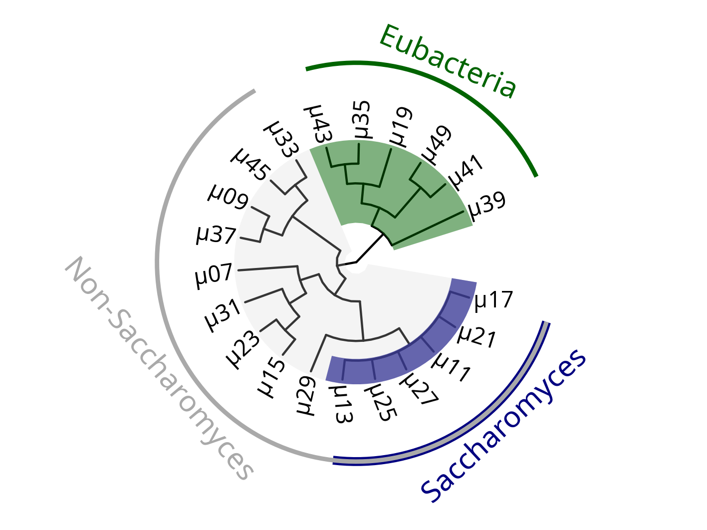

Code | Culture | Species | GenBankID |
|---|---|---|---|
μ01 | Reference | Propionibacterium freudenreichii | — |
μ03 | Reference | Saccharomyces cerevisiae | — |
μ05 | Reference | Lactococcus lactis | — |
μ17 | Farmhouse Ale | Saccharomyces cerevisiae | ON763764 |
μ23 | Farmhouse Ale | Wickerhamomyces anomalus | ON763766 |
μ33 | Farmhouse Ale | Candida pseudolambica | ON763771 |
μ07 | Sour Ale | Lanchancea fermentati | ON763759 |
μ13 | Sour Ale | Saccharomyces cerevisiae | ON763762 |
μ19 | Sour Ale | Levilactobacillus brevis | ON758946 |
μ25 | Sour Ale | Saccharomyces cerevisiae | ON763767 |
μ45 | Sour Ale | Pichia occidentalis | ON763773 |
μ09 | Tibicos | Pichia membranifaciens | ON763760 |
μ27 | Tibicos | Saccharomyces cerevisiae | ON763768 |
μ39 | Tibicos | Acetobacter fabarum | ON758948 |
μ11 | Kombucha | Saccharomyces cerevisiae | ON763761 |
μ29 | Kombucha | Torulaspora delbrueckii | ON763769 |
μ47 | Kombucha | Streptococcus salivarius* | — |
μ21 | Kefir A | Saccharomyces cerevisiae | ON763765 |
μ31 | Kefir A | Saccharomycodes ludwigii | ON763770 |
μ35 | Kefir A | Levilactobacillus brevis | ON758947 |
μ41 | Kefir A | Lacticaseibacillus paracasei | ON758949 |
μ15 | Kefir B | Debaryomyces fabryi | ON763763 |
μ37 | Kefir B | Pichia membranifaciens | ON763772 |
μ43 | Kefir B | Levilactobacillus brevis | ON758950 |
μ49 | Kefir B | Lacticaseibacillus paracasei | ON758951 |
* Phenotypically identified. | |||
Mykes
Site em construção…
Projeto Kultur
- Kultur
-
Kultur, em alemão, é o produto do cultivo, do ato de dar atenção e desenvolver. Ao longo de milhares de anos, culturas microbianas vem sendo tradicionalmente cultivadas por diferentes culturas humanas num ato de desenvolvimento mútuo.
Micro-organismos foram isolados a partir de culturas tradicionais como parte do processo de desenvolvimento de uma bebida fermentada de baixo teor alcoólico durante meu doutorado, em uma parceria entre a Faculdade do Odontologia e o Instituto de Ciência e Tecnologia de Alimentos da Universidade Federal do Rio Grande do Sul.
Conforme a Tabela 1 do artigo publicado na Food Bioscience, essa é a identificação molecular dos micro-organismos selecionados (Eidt et al. 2023).
Entre esses micro-organismos fermentativos existe uma relação de parentesco evolutivo. Para ilustrar melhor tal relação veja a árvore filogenética abaixo.
 O grupo verde representa os micro-organismos classificados como bactérias, que compartilham um ancestral comum distinto dos demais micro-organismos, que são leveduras. As leveduras estão divididas aqui em dois grandes grupos. O grupo azul reúne as espécies do gênero Saccharomyces, conhecidas por sua clássica atuação na fermentação alcoólica. Já o grupo representado em cinza engloba leveduras não-Saccharomyces, ou seja, outros gêneros com ramos evolutivos distintos e um enorme potencial fermentativo a ser explorado!